Tasarım
Mimari ve iç mekân projeleri, 3B görselleştirme.
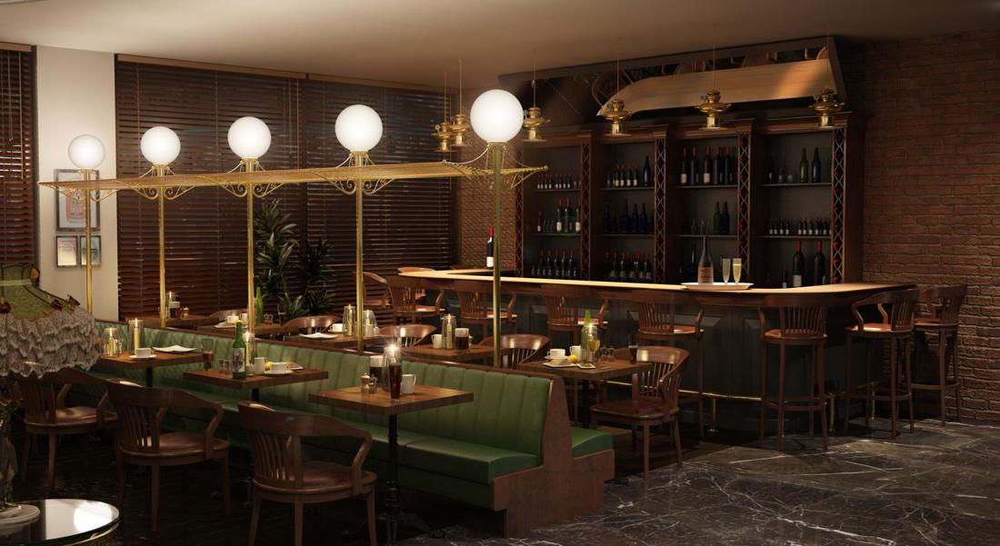
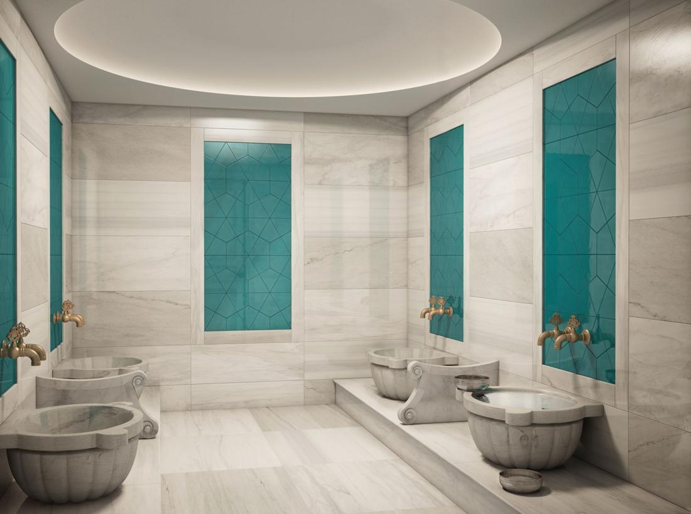
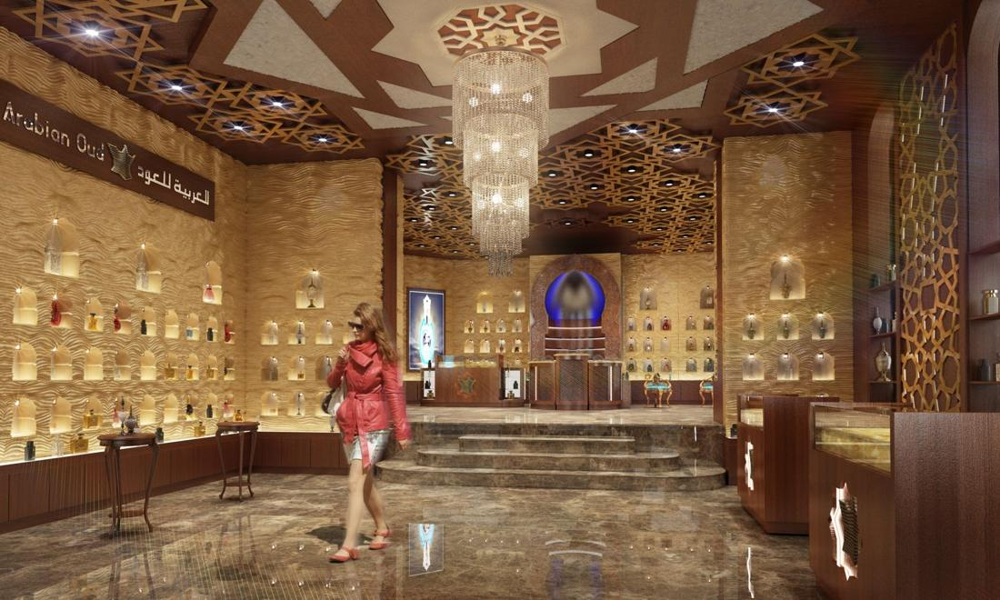
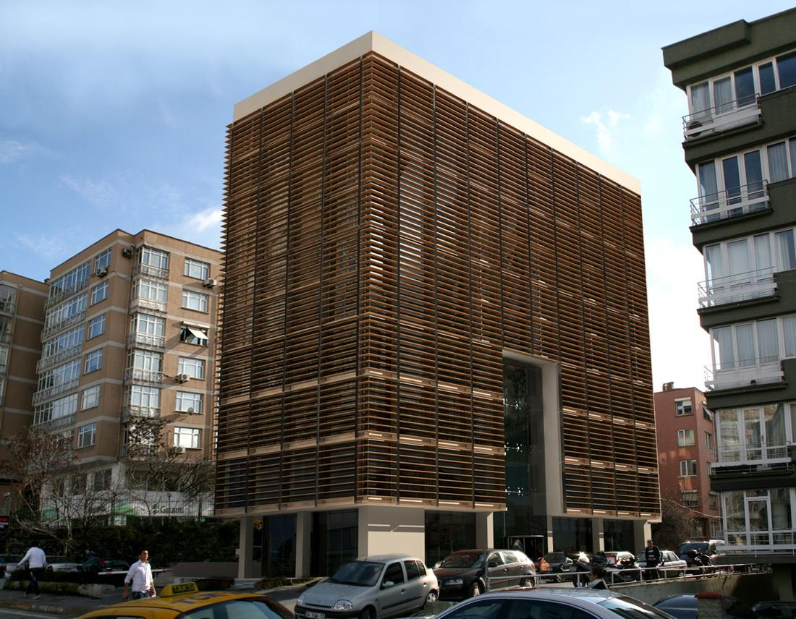
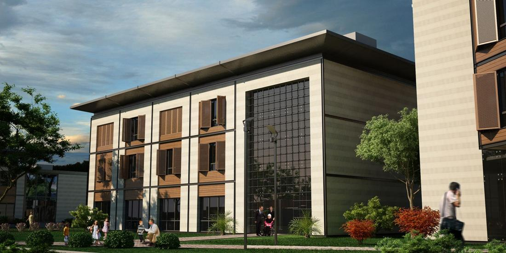
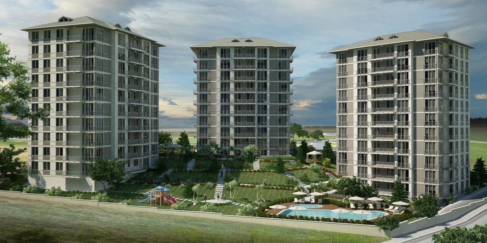
3D Dizayn 1994–2026, tüm arşiv
3D Dizayn, 1994'ten 2026 başında kapanışına kadar mimari ve iç mekân projeleri, şantiye uygulamaları, endüstriyel ürün tasarımı, 2B/3B animasyon ve perspektif çalışmaları yaptı. İşlerin bir kısmı şirketin kendi projeleri, bir kısmı mimarlık ve inşaat firmaları için hazırlanmış sunumlardı.
Tüm arşiv, 104 görselGoogle Drive
Referanslar, 21 firma
HASSA MimarlıkOyalido Mobilya & DekorasyonR&G TasarımCihan İnşaatProje MasifMert İnşaatKarpem İnşaat & PeyzajAGS Mimarlık RestorasyonA3 Mimarlık & TasarımAtasoy MimarlıkHabitat İnşaat ve Proje YönetimTasarı Uygulama MerkeziMNA YapıNUN Architecture & Designİl-Te MimarlıkMor MimarlıkAda YapıHasan Okan Ülbay MimarlıkKahve DünyasıYalçın Yapı ProjeKanalet İnşaat
3D modeller
3ds Max ve V-Ray ile hazırlanmış 62 mobilya, iç mekân ve mimari detay modeli CGTrader'da yayında; 58 binden fazla kez görüntülendi. Tüm modeller
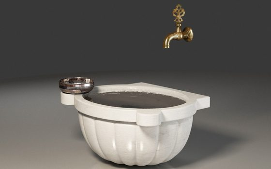
Hamam kurnasıMermer kurna, musluk ve hamam tası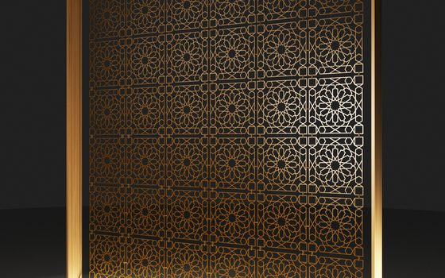
Oryantal panoGeometrik desenli metal ayırıcı pano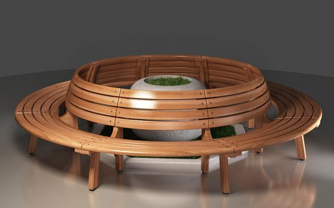
Yuvarlak bankAğaç çevresine ahşap bank ve saksı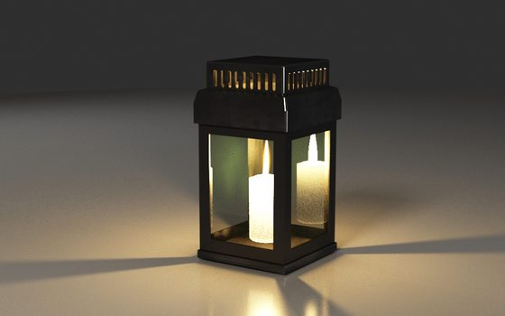
FenerMumlu metal fener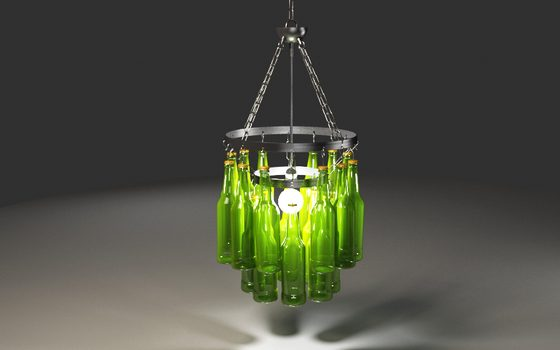
Şişe avizeCam şişelerden yapılmış avize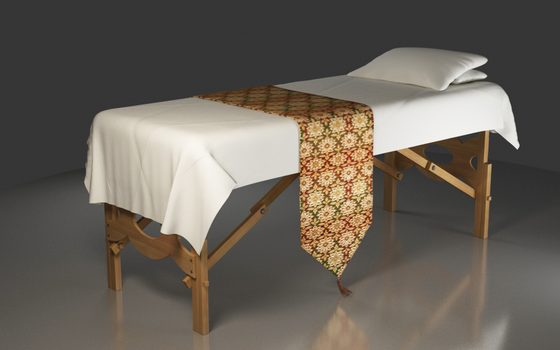
Masaj yatağıAhşap ayaklı masaj yatağı ve örtüsü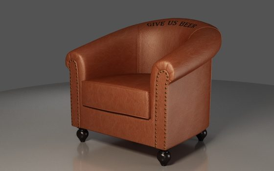
Deri berjerKapitoneli, perçinli deri koltuk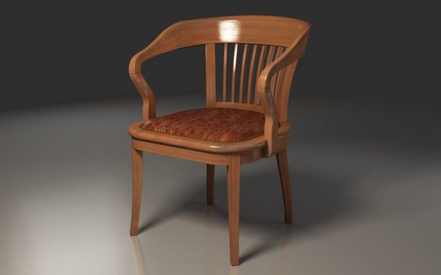
Ahşap sandalyeKolçaklı, eski tip ahşap sandalyeModellerin bir kısmı, 3D Dizayn'daki ortağı Mim. Şenay Gök Ataman'ın çalışmasıdır.
Kendi tasarlayıp ürettikleriLamba3D, lazer kesiciler ve 3D baskı nesneler Üretim bölümünde.
Yazılım
Tarayıcıda hemen açılan araçlar ve masaüstü projeleri. Hepsi veriyi kullanıcının kendi makinesinde tutar.
Mimari ve geometri
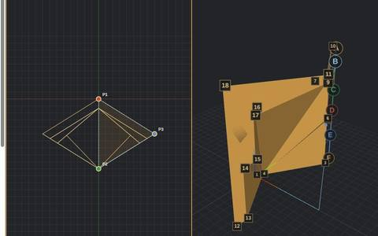
Mukarnas 3DMukarnas hücrelerinin parametrik 3B modelleri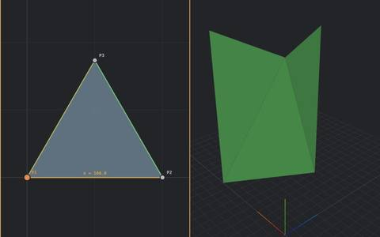
Köşe MukarnasÜçgen plan üzerinde köşe mukarnası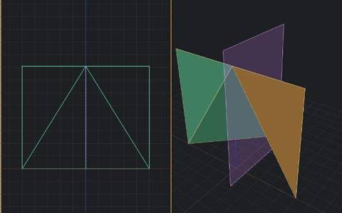
Niş MukarnasAçıklık, asaba ve sıra ile niş mukarnası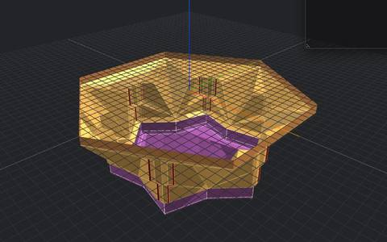
Püskül 3DÇok katlı sarkıt yapılar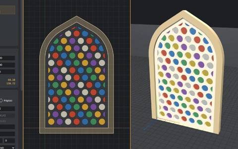
Revzen 3DRenkli camlı Osmanlı revzen pencereleri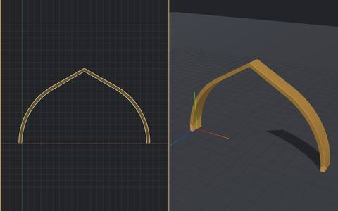
Kemerler 3DTeğet ve sivri kemer modelleri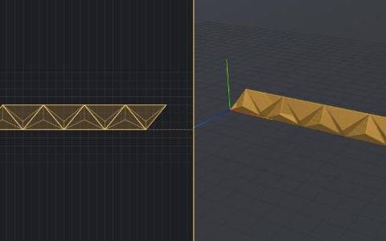
Yedi-SekizGeleneksel 7-8 geçme deseniÜretim ve analiz
Hiçbiri kurulum istemez, dosyalarını hiçbir sunucuya göndermez. Hepsi bir arada
Masaüstü ve diğer projeler
Önceki çalışmalar
2017'den bu yana blogda paylaştığı betikler ve küçük programlar. Hikâyenin başı: Programcılık maceralarım, delikli kartlarla Fortran'dan başlayan yol.
3ds Max betikleri: kemer ve geometri
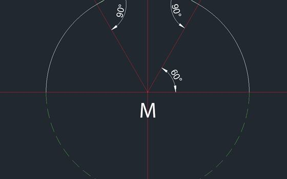
2018Teğet kemerTek merkezli teğet kemeri çizen 3ds Max betiği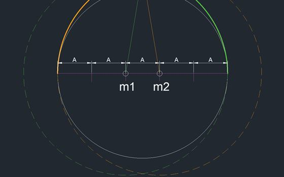
2018Penci kemerPenci kemeri çizen betik ve kemer tablosu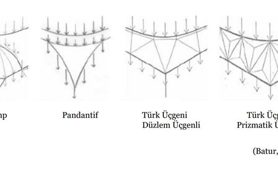
2020Türk üçgeniPandantif ve Türk üçgeni geçişlerini kuran betik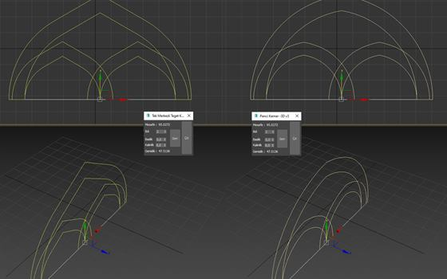
2021Kemer betiği v3Kemer betiklerinin geliştirilmiş sürümüBugünkü Kemerler 3D ve Yedi-Sekiz araçlarıyla aynı konunun ilk adımları.
Diğer betikler ve programlar
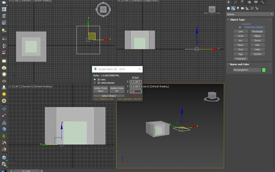
2018Altın oranSeçili nesneleri altın oranla ölçekleyen betik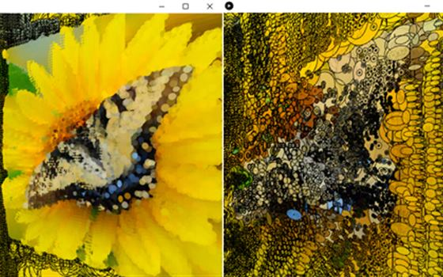
2017Processing maceramProcessing ile ilk denemeler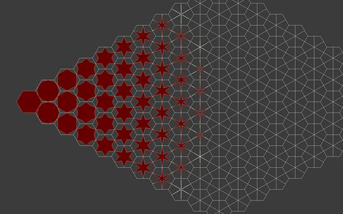
2019Renk bulucuGörüntüde istenen rengi piksel piksel bulan program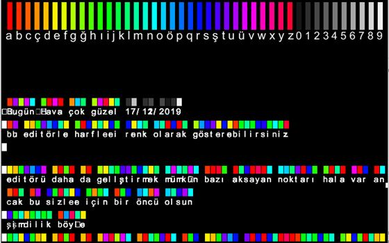
2020Ezberci zekâHarfleri renklerle gösteren program ve ezber üzerine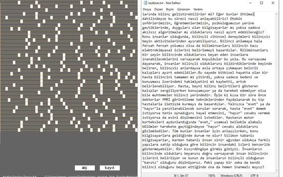
2021Kelimelerin biçimiSayfadaki kelime uzunluklarından desen çizen program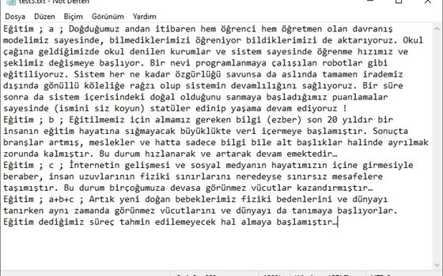
2021Yazıları tasnifYazıları okumadan konusuna göre ayırmayı deneyen kod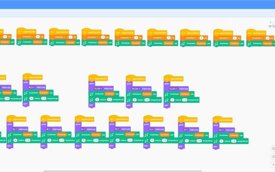
2022Scratch ile piyanoÇocuklar için Scratch'te piyano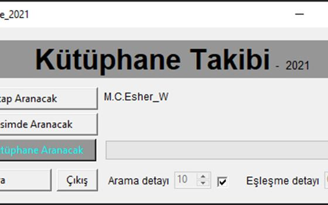
2024Kütüphaneci AIKitabı sırt fotoğrafından raftaki yerinde bulan Python programıÜretim
Atölyede kendi yaptığı makineler ve nesneler: CNC ve lazer kesiciler, Arduino devreleri, 3D baskı parçalar. Her birinin yapım hikâyesi blogda.
Lamba3D
En önemli tasarım ve imalat işi. Büyük açıklıkları örtmek için tasarladığı bir şemsiyenin kâğıt maketiyle oynarken aklına bir soru geldi: esnetilen bir küre nasıl bir biçim alır? Cevap, açılıp kapanan bir lamba oldu. Kâğıt maketten 3ds Max animasyonuna, lazerle kesilen asetattan servo motora, Arduino devresinden onu süren yazılıma kadar baştan sona kendisi tasarladı ve üretti.
kâğıt maket3ds MaxAutoCAD açılımlazer kesimservo ve Arduinoyazılım
Yapım hikâyesini oku

Makineler
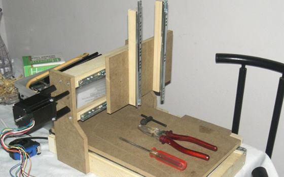
2006CNCÖnce MDF ve çekmece raylarıyla, sonra alüminyum ve çelikle yapılan CNC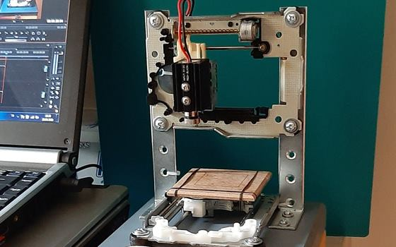
2020Mini lazer kesiciEski DVD sürücülerinden minyatür lazer kesici ve çizici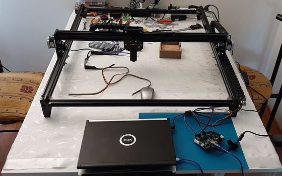
202120W lazer kesiciSigma profil şase, 60×80 cm işleme alanı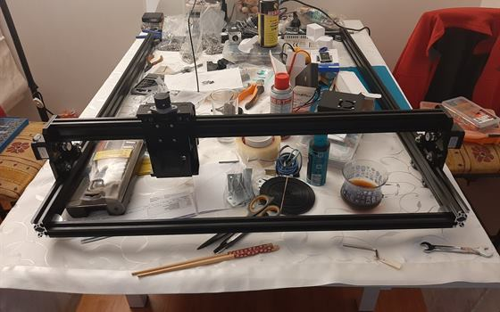
202380W lazer kesiciAynı şasede daha güçlü lazer ve yeni güç devresiElektronik ve nesneler
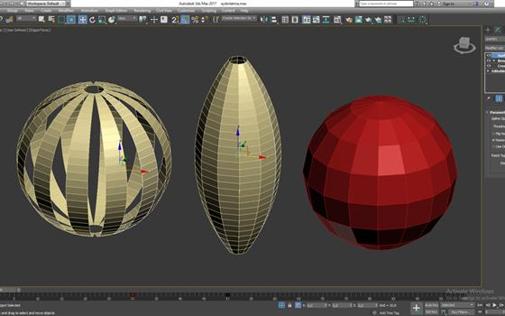
2017Lamba3DEsnetilmiş bir küreden doğan lamba: maket, Arduino ve yazılım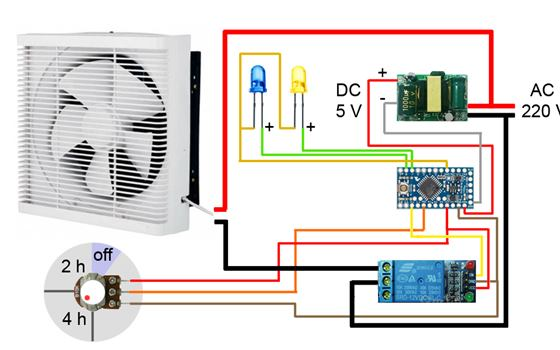
2017Zaman ayarlı aspiratörAspiratörü belirli aralıklarla çalıştıran Arduino devresi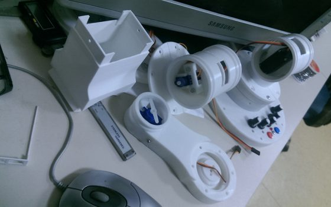
2019Robot kol3D baskı parçalı, ESP32 ve servolarla çalışan, hareket öğretilebilen kol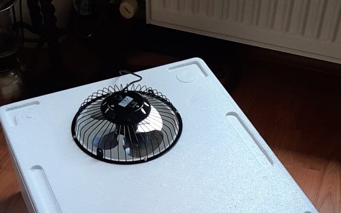
2021Ev tipi klimaKöpük kutu, masaüstü fan ve donmuş su şişeleriyle bir saatte kurulan serinletici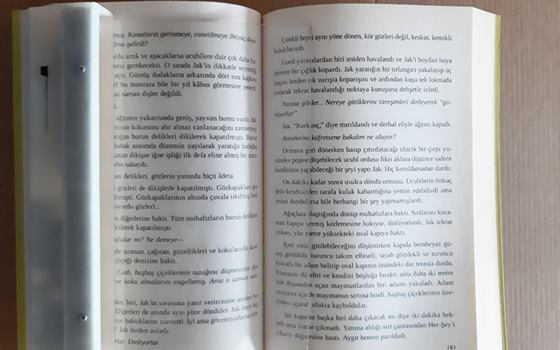
2022Kitap okuma lambası3ds Max'te tasarlanıp 3D yazıcıda basılan LED'li lamba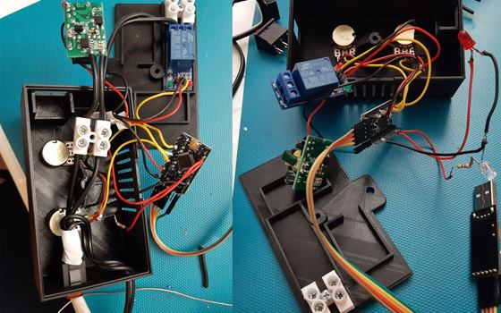
2023Zaman ayarlı prizArduino Pro Mini ve röleyle, 3D baskı kutulu zamanlayıcı3D yazıcı ve baskılar
Güncel donanım çalışmaları (Tek düğmeli kumanda, Optik plak) Yazılım bölümündeki proje listesinde.
Araştırma
Aktarım Zinciri
Bilgi kuşaktan kuşağa nasıl taşınır, nerede kopar? Çalışma aktarımı altı halkalı bir zincir olarak ele alıyor ve bu modeli 32 gerçek nesne üzerinde sınıyor. Türkçe ve İngilizce, etkileşimli.
paketçözücübağlamörtük bilgiaparatbakım
Çalışmayı aç
Atıf
Çandöken, A. (ahmetoff). Aktarım Zinciri / The Transmission Chain. Zenodo. https://doi.org/10.5281/zenodo.22093227
Lisans ve yöntem
MIT lisanslı, tek dosyalık açık kaynak. Software Heritage'da arşivli, OpenAIRE'de dizinli. Çalışmadaki değerlendirmeler yapay zekâ modelleriyle yapılmıştır; hakemli insan incelemesi değildir. Hukuka aykırı amaçlarla kullanılamaz.
Yazılar
Aktarım Zinciri'ne giden yolda blogda yazdığı denemeler: algı, hafıza, öğrenme ve değişim üzerine.
201720182020202020232026
Varlık, gerçeklik mi?
Dille anlatılamayanı ve gerçekliğin sınırlarını sorgulayan bir deneme.
Beyin depo mu, alıcı mı?
Hafızanın nerede durduğuna dair bir teori.
Değişen kabuk
Eğitim, ezber ve hızlanan değişimin insana etkisi.
Frekans
Ölçebildiğimizi var, ölçemediğimizi yok saymak üzerine.
Gelişen insan mı?
Aynı bedenle doğup koşullarla bambaşka insanlara dönüşmek.
Kuşaktan kuşağa ne geçer?
Aktarım Zinciri'nin çıkış yazısı: bir bilgi aktarılırken ne kaybolur?
Bütün yazılar blogda2017'den bu yana 40 yazı.
Hakkımda
1965'te İstanbul'da doğdu, hâlâ İstanbul'da yaşıyor. Üniversiteden sınıf arkadaşı Sezgin'le evli; bir oğlu var, aynı zamanda dede.
Merakı resim, maket ve elektronikle başladı; zamanla mimarlığa, fotoğrafa ve yazılıma uzandı. Bir şeyi anlamanın en iyi yolunu onu yapmakta bulur. En önemli tasarım ve imalat işi Lamba3D: esnetilen bir küreden doğan, kâğıt maketten lazer kesime, Arduino'dan yazılıma kadar baştan sona kendi yaptığı, açılıp kapanan bir lamba. Kitap okuma lambasını da kendisi tasarlar, aspiratörünü Arduino ile zamanlar, DVD sürücülerinden lazer kesici yapar, ihtiyaç duyduğu programı kendisi yazar.
Okuduklarını ve düşündüklerini blogunda paylaşır; kelimelerin anlamı, ezberci zekâ, kuşaktan kuşağa ne geçtiği gibi sorular üzerine yazar. Bugünlerde en çok mukarnas geometrisi ve bilginin kuşaklar arasında nasıl taşındığıyla uğraşıyor.
1994'ten 2026'ya kadar 3D Dizayn'da mimari ve iç mekân projeleri, görselleştirme ve animasyon işleri yaptı.
Eğitim
Lisans
İç Mimarlık
Marmara Üniversitesi
2015–2017
Fotoğrafçılık ve Kameramanlık
Anadolu Üniversitesi, önlisans
2017–2019
Medya ve İletişim
Anadolu Üniversitesi, önlisans
Ortaokul, lise
Kocamustafapaşa Lisesi
Orta ve lise eğitimi
İlkokul
Yedikule İlkokulu
İlköğretim
Bağlantılar
Her şey tek sayfadaBütün projeler, eğitim ve referanslar ayrıntılı sürümde.